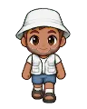

Wiki › Items › Bags and backpacks › Travel Backpack

Travel Backpack
Bag Level 40 Uncommon
Fits a lot of stuff: +15 slots. Stays inside the backpack (up to 4 bags count).
- Type
- Bag
- Level
- 40
- Rarity
- Uncommon
- Bag
- +15 slots
- Shop price
- 🪙 30,000
Where it comes from
Where to buy
 Dona Cida — Dona Cida's Bazaar 🪙 30,000
Dona Cida — Dona Cida's Bazaar 🪙 30,000
Seu Juca from the Newsstand — Campinho Village 🪙 30,000 Bené's Kiosk — Footvolley Beach 🪙 30,000
Bené's Kiosk — Footvolley Beach 🪙 30,000 Dona Neide — Neide's Sports Shop 🪙 30,000
Dona Neide — Neide's Sports Shop 🪙 30,000 Bia the Nutritionist — Training Center Cafeteria 🪙 30,000
Bia the Nutritionist — Training Center Cafeteria 🪙 30,000 President Almeida — Legendary Stadium 🪙 30,000
President Almeida — Legendary Stadium 🪙 30,000 Aunt Zuzu from the Snack Bar — Campinho Village 🪙 30,000
Aunt Zuzu from the Snack Bar — Campinho Village 🪙 30,000 Dona Amália from the Pastry Shop — Lisbon — Bairro Alto 🪙 30,000
Dona Amália from the Pastry Shop — Lisbon — Bairro Alto 🪙 30,000 Don Paco from the Churro Stand — Madrid — Plaza and Barrio 🪙 30,000
Don Paco from the Churro Stand — Madrid — Plaza and Barrio 🪙 30,000 Mr. Wallace from the Fish & Chips Shop — London — Camden and East End 🪙 30,000
Mr. Wallace from the Fish & Chips Shop — London — Camden and East End 🪙 30,000 Seu Karim from the Market — Cairo — On the Banks of the Nile 🪙 30,000
Seu Karim from the Market — Cairo — On the Banks of the Nile 🪙 30,000 Dona Yuki from the Onigiri Stand — Tokyo — Neon District 🪙 30,000
Dona Yuki from the Onigiri Stand — Tokyo — Neon District 🪙 30,000 Seu Rashid the Date Seller — Doha — City of Dunes 🪙 30,000
Seu Rashid the Date Seller — Doha — City of Dunes 🪙 30,000 Uncle Joe from the Food Truck — Miami — Ocean Drive 🪙 30,000
Uncle Joe from the Food Truck — Miami — Ocean Drive 🪙 30,000 Nonna Giulia from the Pizzeria — Milan — Piazza and Curva 🪙 30,000
Nonna Giulia from the Pizzeria — Milan — Piazza and Curva 🪙 30,000 Frau Helga from the Bakery — Munich — Clock Square 🪙 30,000
Frau Helga from the Bakery — Munich — Clock Square 🪙 30,000 Madame Colette from the Boulangerie — Paris — On the Banks of the Seine 🪙 30,000
Madame Colette from the Boulangerie — Paris — On the Banks of the Seine 🪙 30,000 Doña Rosa from the Empanada Stand — Buenos Aires — La Boca 🪙 30,000
Doña Rosa from the Empanada Stand — Buenos Aires — La Boca 🪙 30,000 Seu Tião the Mate Seller — Rio de Janeiro — Copacabana 🪙 30,000
Seu Tião the Mate Seller — Rio de Janeiro — Copacabana 🪙 30,000 Seu Nenê the Pastel Maker — Santos — Waterfront and Vila Belmiro 🪙 30,000
Seu Nenê the Pastel Maker — Santos — Waterfront and Vila Belmiro 🪙 30,000 Seu Tonico, the carpenter — Campinho Village 🪙 30,000
Seu Tonico, the carpenter — Campinho Village 🪙 30,000 Seu Coral, the merchant — Atlantis — Sunken City 🪙 30,000
Seu Coral, the merchant — Atlantis — Sunken City 🪙 30,000 Seu Plutão's Galactic Shop — Galactic Space Station 🪙 30,000
Seu Plutão's Galactic Shop — Galactic Space Station 🪙 30,000